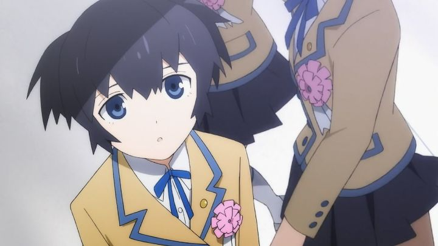

Disclaimer: This review covers the 2012 8-episode television adapton of "Black Rock Shooter.""Black Rock Shooter" had the makings of an international sensation. Originally based on illustrations by an onlne artist, it turned into a hit vocaloid song, a famous 55-minute OVA, a bunch of games and manga series, and this tv anime. With hyper stylish action scenes and fantastic character designs, and ahead-of-its-time CGI, the multimedia franchise was nothing short of iconic.But the franchise never fully took off outside of Japan. And I think that's because, for some reason, no American distributor licensed it. The series would have felt at home with Funimation, Sentai, Aniplex or Viz, but nothing happened. No dub. No disc. If you wanted a copy, pay a premium to import it from Japan. And so it languished, only popular among the diehard fans in the know. (It was licensed in the UK and Australia, but still no dub, and different region-encodings still left it out of my hands.)All that until today: in 2021, Discotek came to the rescue yet again. "Shooter" was a stranger license for them, but better late than never. And it got a dub too! Even now, nearly a decade later, "Black Rock Shooter" holds up well and was worth the wait.From all the artwork and promo materials, you might be expecting an action series in a apocalyptic wasteland. Yes, the "dream" sequences take place in these desolete wonderlands. The mysterious hero, "Black Rock Shooter," clad in a bikini, boots, black overcoat and blazing blue eyes, travels across the land with weapons in hand. She faces many threats, and like a super-cool video game, she takes damage and manages to beat them all. Never mind dialogue and story, the action does all the talking!... of course, these are just dream sequences that convey the internal feelings of middle-school girls. Mato is our lead, a cheerful and upbeat girl, who wants to be friends with a cool and quiet girl named Yomi. However, Yomi is hesitant to be social, and when visiting her house, it becomes clear: there's a wheelchair-bound girl that ominously blames Yomi for her condition, using guilt to keep her as Yomi's only friend, against her will. Mato receives the girl's bullying and Yomi's rejection, experiencing pain unlike any she's dealt with. Ah, social anxieties and depression, the unavoidable parasites of life. So yeah, the cool action scenes are just metaphors for Mato trying to fight off the evil feelings and villains in her head. They're practically separate from the daytime scenes, and inconsequential to the story (at first). But they're still really cool to watch, brutally violent but without consequence, overtly stylish and watchable. But don't think the daytime scenes are anything to scoff at. The plot I described is just the first arc, and the arcs that follow introduce new girls with their own issues. Not only that, but it refuses to forget the previous arcs and pretend everything gets resolved: life and relationships aren't that easy. This is truly a real drama. It shouldn't surprise anyone that it was written by Mari Okada, who would later become one of anime's most famous writers, for exactly these types of difficult and complex themes (specifically, the suffering of pre-teen girls). The show even features the school's psychological counselor, a trusted (at first) adult for the poor girls to talk to, pretty impressive for a middle school and something more schools should adopt. It's easy to simply describe one or two of the characters as cartoonishly cruel, but by and large, it's still an effective story in a short eight episodes, roughly the length of a 3-hour movie. However, by the second half of the series, the episodes get progressively more complex as they try to blend the dream world and the real world, explaining that perhaps both are real after all. The lore here is a bit messy, as is the motivations of certain characters. It requires the viewer to marathon everything at once, or else risk being lost at what was happening when returning a week later. Perhaps one or two extra episodes could have helped provide better context and pacing. Even if the story unravels, the sheer emotional power is enough to make an impact.From a production standpoint, it's clear that there are two separate studios, one working on the action dreams, and the other on the depressing reality. As expected, the CGI choreography in the dreams is great, and retains all the style the franchise is known for. The real-life sequences are less impressive by comparison at first, but given time, it reveals some expressive strengths of its own during more emotional moments. There's something about the whole show that still feels kind-of low budget, but that almost makes it even more impressive how much was pulled off.Even though the English dub wasn't necessary to enjoy the series, I'm happy it's here now, and pleased to say it's a strong dub, noteworthy given the age of the characters and difficulty of the material. And the music's OK; Hatsune Miku returns to sing the opening theme, by the way!I meant to watch "Black Rock Shooter" for a long time, and I expected I'd at least like the action scenes, but didn't expect much else beyond that. Surprisingly, the writing holds up well enough to match, and sometimes even outdo, those beautiful dream sequences. The two parts balance each other, the dreams making reality a little easier to watch.
- "Ani" More reviews can be found at : https://2danicritic.github.io/ Previous review: review_Black_Lagoon_-_Roberta's_Blood_Trail Next review: review_Blade_of_the_Phantom_Master